行動ヒヒーンとは
やる気を待たずに動く。 まず一歩を踏み出す。
やる気を待たずに動く。 まず一歩を踏み出す。
行動ヒヒーンとは、 感情ややる気を待たずに行動することを 表現したオリジナルキャラクターです。 人は行動した後に感情が変化することがあります。 そのため解釈設計では、 感情より先に行動することを重視しています。
行動ヒヒーンは、 解釈設計サイクルの出発点です。 まず行動する。 結果を観察する。 解釈する。 修正する。 そして再び行動する。 その繰り返しが成長につながります。


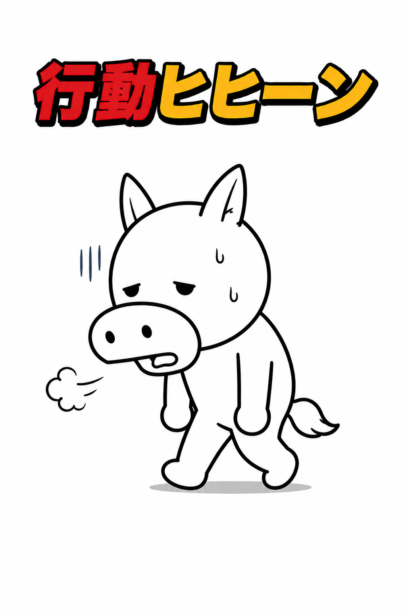
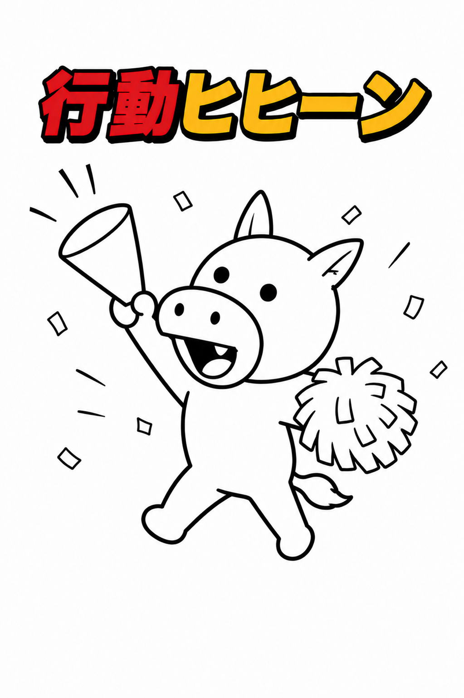
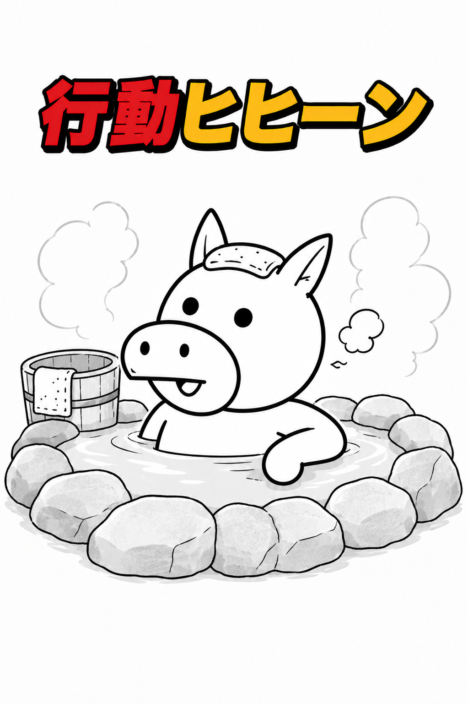
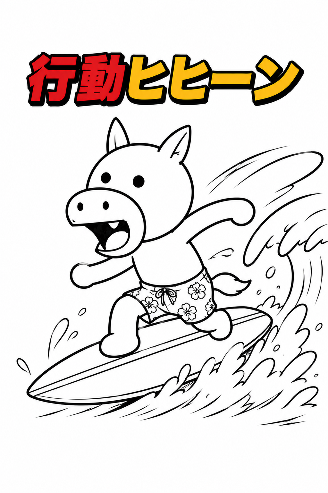
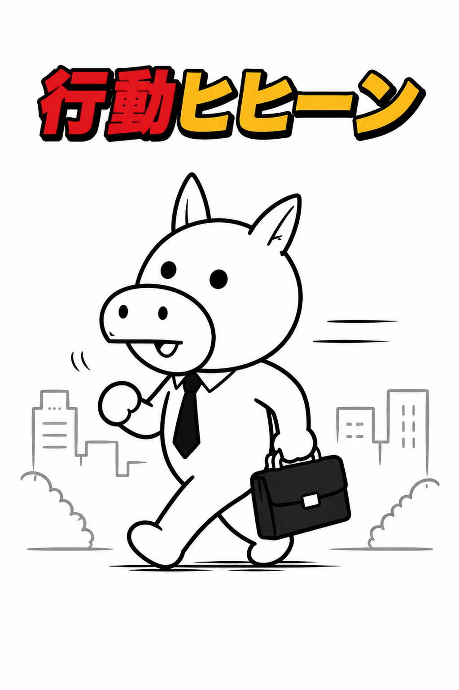
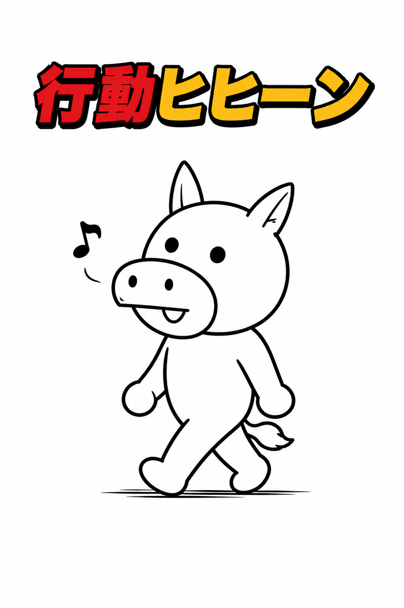
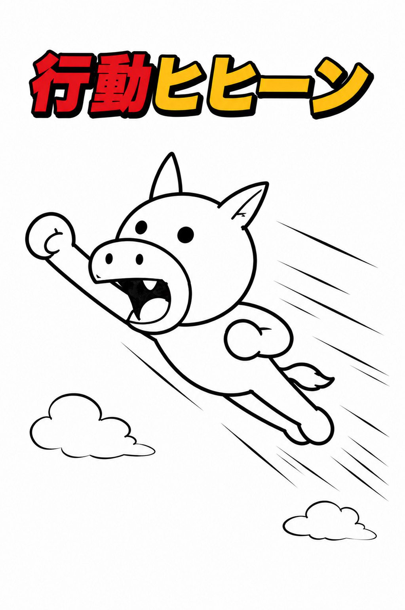
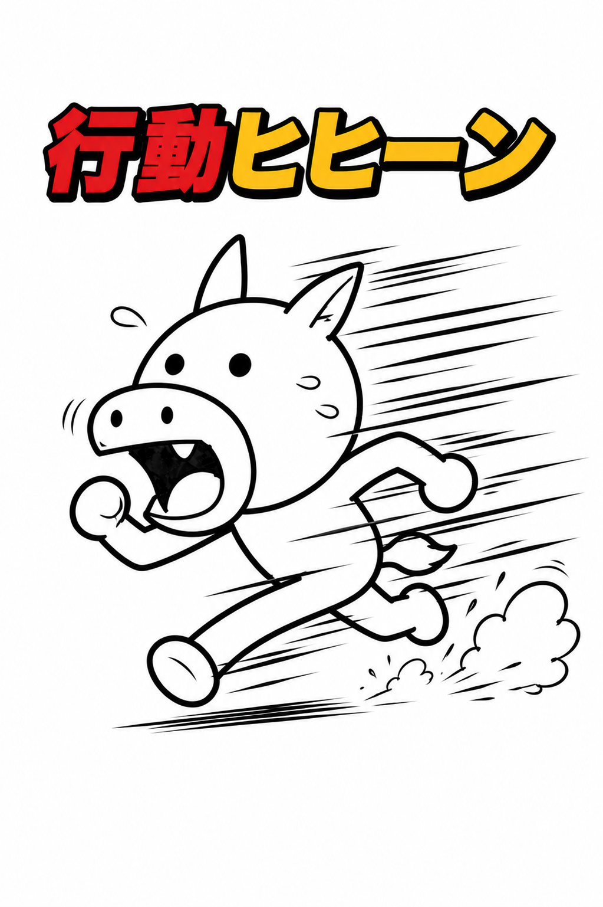
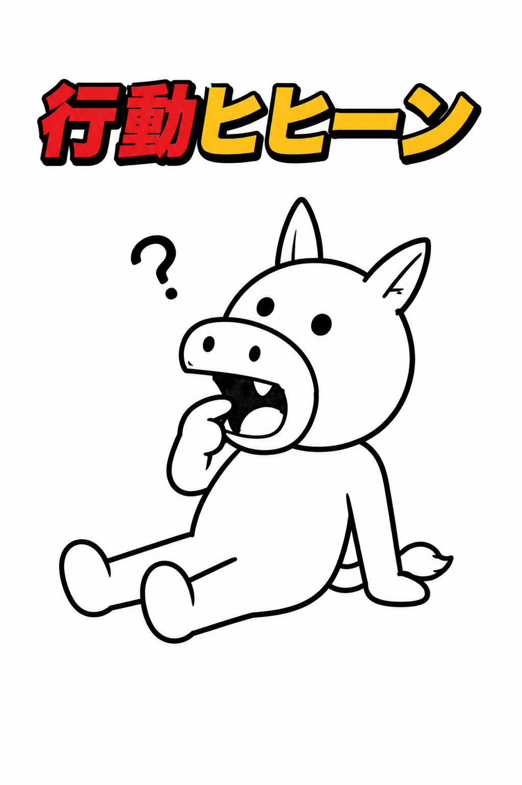
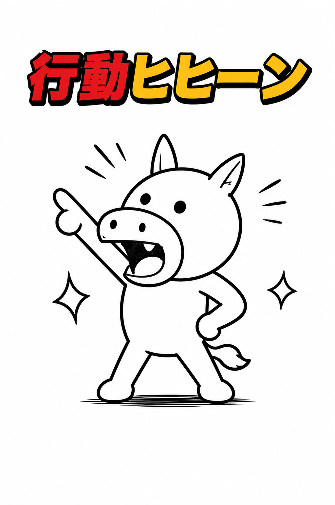
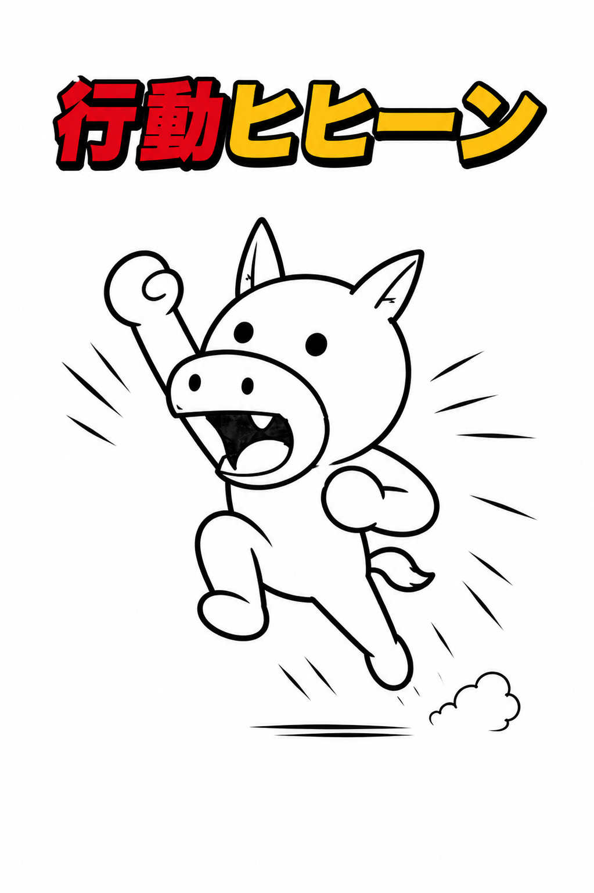
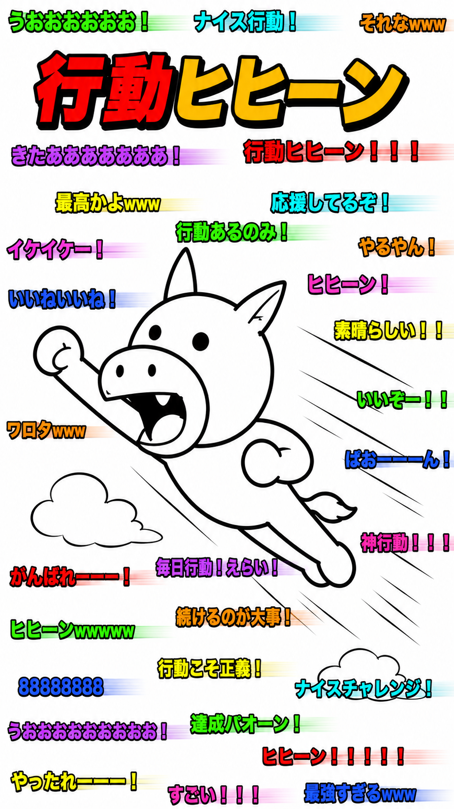
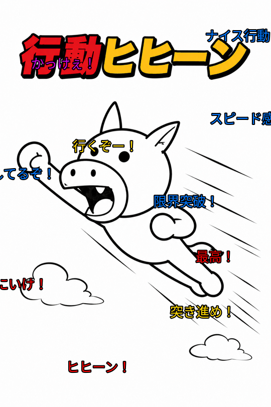
・やる気が出たら動くではなく、動いてからやる気を引き出す ・完璧を待たない ・小さくても前に進む ・続けながら修正する ・結果よりも行動量を重視する
感情ブヒー → 感情の変化を表現するキャラクター 達成パオーン → 行動の積み重ねによる成果を表現するキャラクター ヘテオジマーベリック → 群れずに自分の方向へ進む存在